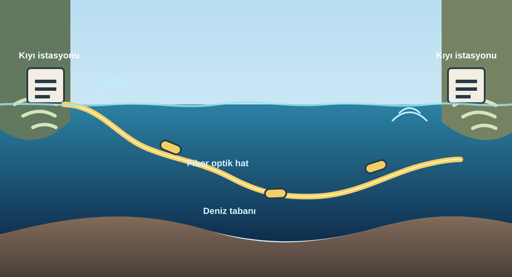

Bir fotoğrafı kıtalar arasında gönderdiğinizde veri görünmez bir buluta yükselip okyanusun üzerinden uçmaz. Çoğu kıtalararası bağlantının yolu, kıyıdaki bir istasyondan deniz tabanına inen ve binlerce kilometre boyunca ilerleyen fiber optik kablolardan geçer. Bu hatlar, internetin fiziksel omurgasının önemli bir parçasıdır: ışık darbelerini veriye dönüştürür, kıtaları birbirine bağlar ve karadaki ağlara teslim eder.

İnternetin okyanustaki yolu
Bir istek önce telefon, bilgisayar veya yerel ağınızdan servis sağlayıcınıza ulaşır. Buradan yönlendiriciler, veri merkezleri ve karasal fiber hatlar üzerinden uygun uluslararası çıkış noktasına taşınabilir. Kıyıdaki kablo istasyonunda trafik deniz altı sistemine aktarılır; karşı kıtadaki istasyonda yeniden karasal ağa çıkar. Sonraki yönlendiriciler paketi hedef sunucuya ulaştırır, yanıt da aynı güzergâhı izlemek zorunda olmadan uygun başka bir yoldan dönebilir.
Bu ağ, tek bir kablodan ibaret değildir. Farklı şirket ve konsorsiyumların işlettiği kablolar, iniş istasyonları ve kara bağlantıları birbirine eklenir. TeleGeography’nin deniz altı kablo haritası, dünya üzerindeki başlıca kablo sistemlerini ve iniş noktalarını gösterir. Haritadaki çizgiler gerçek kabloların deniz tabanındaki santimetre hassasiyetli güzergâhı değildir; ağın hangi kıyıları birbirine bağladığını anlamaya yarayan genel bir görselleştirmedir.
Bakır değil, ışık taşıyan cam lifler
Bir deniz altı telekomünikasyon kablosunun merkezinde, saç telinden ince cam fiberler bulunur. Verici ekipman, bilgiyi ışık darbeleriyle kodlar; fiberin içindeki ışık, kablo boyunca ilerleyerek alıcı uçta yeniden elektriksel veya dijital sinyallere çevrilir. Birden fazla fiber çifti ve farklı dalga boyları aynı sistemin kapasitesini artırabilir. Böylece ses, video, bulut hizmetleri ve diğer internet trafiği aynı fiziksel hat üzerinden taşınır.
Işık deniz boyunca ilerlerken sinyal zayıflar. Bu nedenle okyanus tabanındaki hatta belirli aralıklarla tekrarlayıcılar (repeater) yerleştirilir; bunlar optik sinyali güçlendirerek yoluna devam etmesini sağlar. Kablodaki enerji iletkeni, bu ekipmanların çalışması için gereken gücü kıyı istasyonundan taşır. Sistemin dış katmanları ise fiberleri suya ve çevresel etkilere karşı korur. Kablonun yapısı ve zırhı her noktada aynı değildir: kıyıya yakın, insan faaliyetlerinin yoğun olduğu bölgelerde daha fazla koruma gerekebilirken açık denizde tasarım farklılaşır.
Kablo deniz tabanına nasıl yerleştirilir?
Güzergâh belirlenmeden önce deniz tabanı araştırılır; derinlik, jeoloji, mevcut altyapı, balıkçılık faaliyetleri ve çevresel koşullar dikkate alınır. Kablo döşeme gemisi, kabloyu makaralardan kontrollü biçimde bırakırken planlanan rotayı izler. Sığ ve riskli kıyı kesimlerinde kablo özel bir denizaltı sabanıyla veya uzaktan kumandalı araçlarla tabana gömülebilir. Derin sularda çoğu kablo deniz tabanının üzerinde uzanır. Kabloyu her yerde toprağın derinine gömmek mümkün veya gerekli değildir; koruma yöntemi yerel riske göre seçilir.
Kıyıdaki iniş istasyonu, deniz altı sistemini karasal fiber ağlarla buluşturur. Bu nedenle hattın çalışması sadece okyanustaki kabloya bağlı değildir: istasyona giden kara bağlantıları, güç sistemleri ve farklı ağ işletmecileri de bütünün parçalarıdır.
Kablolar neden arızalanır?
Deniz altı kabloları sağlam tasarlansa da zarar görmez değildir. Sığ sularda gemi çapalarının sürüklenmesi ve balıkçılık ekipmanları kabloya takılabilir ya da onu kesebilir. Daha derinlerde deniz tabanı heyelanları, deprem kaynaklı hareketler ve başka doğal olaylar hasara yol açabilir. Üretim veya kurulum kusurları da olası nedenler arasındadır. Hasar, kablonun mutlaka okyanusun ortasında koptuğu anlamına gelmez; kıyıya yakın bir kesinti de uluslararası bağlantıyı etkileyebilir.
Bir kablonun arızalanması, internetin bütünüyle kapanacağı anlamına gelmez. Yönlendiriciler ve ağ işletmecileri trafiği başka kablolara veya karasal güzergâhlara aktarabilir. Ancak alternatif yolların kapasitesi sınırlıysa bağlantı yavaşlayabilir, gecikme artabilir veya bazı hizmetlere erişim geçici olarak aksayabilir. Birden fazla bağımsız hattın aynı bölgeden geçmesi de tek bir olayın etkisini büyütebilir; bu yüzden yalnızca kablo sayısı değil, güzergâhların birbirinden ne kadar ayrıldığı da önemlidir.
Arıza bulununca onarım nasıl yapılır?
Kablo işletmecileri sistemin optik performansını ve elektriksel durumunu izler. Bir kesinti saptandığında ölçüm ekipmanları, kablodaki sinyal değişimini kullanarak arızanın yaklaşık uzaklığını hesaplamaya yardımcı olur. İşletmeci, bakım anlaşmalarına ve bölgesel düzenlemelere göre uygun onarım gemisini görevlendirir. Geminin bölgeye ulaşması; hava ve deniz koşullarına, izinlere, geminin konumuna ve aynı anda bekleyen başka onarımlara bağlıdır.
Onarım ekibi arızalı bölgeye ulaştığında, kablonun konumuna ve deniz derinliğine uygun ekipman kullanır. Uzaktan kumandalı su altı araçları bölgeyi görüntüleyebilir; kancalı bir düzenek kabloyu deniz tabanından yukarı almak için kullanılabilir. Kablonun iki ucu gemiye çıkarılır, hasarlı bölüm ayrılır ve yerine yeni bir parça eklenir. Fiberler hassas biçimde birleştirilip bağlantıların sürekliliği test edilir. Onarılmış bölüm tekrar denize indirilir; sığ sularda mümkünse yeniden gömülür. Son kontroller, sistemin trafiğe güvenle döndüğünü doğrular.
Bu, karadaki bir kabloyu değiştirmekten çok daha karmaşık bir iştir. Geminin hareketi, derinlik, akıntılar, izinler ve yedek kablo stoklarının durumu onarım süresini etkiler. Bu nedenle bir arıza birkaç günde giderilebileceği gibi, koşullara bağlı olarak daha uzun da sürebilir. Onarım tamamlanana kadar ağ trafiği mevcut alternatif yollar üzerinden taşınmaya çalışılır.
Uydu bağlantılarıyla ilişkisi
Uydular da internet bağlantısı sağlar ve uzak bölgelerde, denizde veya kablo altyapısının bulunmadığı yerlerde önemli bir seçenektir. Ancak uydu ve deniz altı kablosu aynı işi aynı biçimde yapmaz. Kablolar, kıtalar arasındaki büyük hacimli trafiğin taşınmasında yüksek kapasiteli omurga yolları sunar; uydular ise geniş kapsama ve farklı erişim senaryolarında öne çıkar. Birbirlerinin alternatifi olmaktan çok, internetin çeşitli katmanlarını tamamlarlar.
Görünmeyen altyapının dayanıklılığı
Deniz altı kabloları, interneti tek başına açıklamaz; ama dijital dünyanın fiziksel bir altyapıya dayandığını açıkça gösterir. Veri merkezleri, karasal fiberler, iniş istasyonları, enerji sistemleri ve okyanus tabanındaki hatlar birlikte çalışır. Bir güzergâhın devre dışı kalması hâlinde başka yolların devreye girebilmesi için ağların yedek kapasiteye, çeşitli rotalara ve koordineli bakım planlarına ihtiyacı vardır.
Bir sonraki görüntülü görüşmeniz veya dosya aktarımınız ekranda anlık görünse de arkasında binlerce kilometrelik planlama, deniz mühendisliği ve ağ işletimi bulunur. İnternetin okyanusu aşması, soyut bir bulutun değil; kıyılarda birleşen kabloların, ışığın ve birbirine bağlı ağların hikâyesidir.
Kaynaklar ve ileri okuma
- TeleGeography, Submarine Cable Map — başlıca deniz altı kablo sistemleri ve iniş noktaları için etkileşimli harita.
Harita, kablo ağlarının genel coğrafi dağılımını anlamaya yardımcı olur; canlı arıza durumu veya ayrıntılı mühendislik güzergâhı olarak değerlendirilmemelidir.